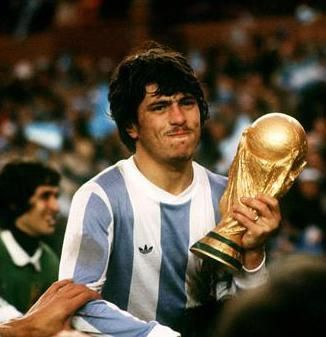
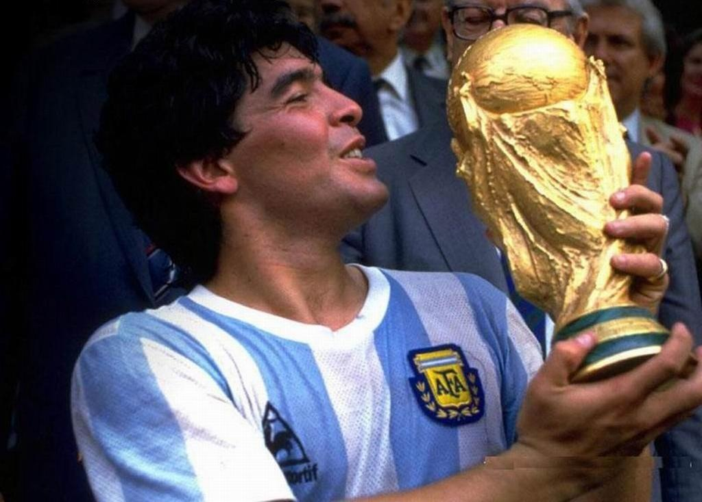
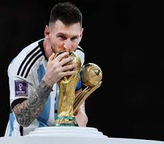

Argentina ganó la Copa Mundial de la FIFA en 1978, que se celebró en su país de origen.
En la fase eliminatoria, Argentina se enfrentó a Polonia, Brasil y Perú. Argentina ganó los tres partidos, lo que les permitió avanzar a la fina
En la final, Argentina se enfrentó a Holanda. El partido terminó empatado 1-1 después del tiempo reglamentario, pero Argentina ganó 3-1 en la prórroga, con goles de Mario kempes y daniel Bertoni

El camino de Argentina en la Copa Mundial de la FIFA de 1986:
Argentina fue ubicada en el Grupo A junto con Corea del Sur, Bulgaria e Italia.
En su primer partido, Argentina empató 1-1 con Corea del Sur, pero luego venció 2-0 a Bulgaria y 1-0 a Italia para clasificar a la siguiente ronda como líder del grupo.
En octavos de final, Argentina venció 1-0 a Uruguay, gracias a un gol de Diego Maradona, que es considerado uno de los mejores goles en la historia de los Mundiales.
En cuartos de final, Argentina venció 2-1 a Inglaterra, en un partido recordado por los dos goles de Diego Maradona: el primero, la "Mano de Dios", en la que tocó el balón con la mano, y el segundo, considerado el "Gol del Siglo".
En semifinales, Argentina venció 2-0 a Bélgica con goles de Maradona y Jorge Valdano.
En la final, Argentina se enfrentó a Alemania Federal. El partido fue muy parejo, pero un gol de Jorge Burruchaga en el segundo tiempo le dio a Argentina la victoria por 3-2 y su segunda Copa del Mundo.
Así fue como Argentina ganó la Copa del Mundo de 1986 en México, liderada por Diego Maradona, uno de los jugadores más grandes en la historia del fútbol.

Tras un traspie contra arabia saudita, donde la albiceleste caia por dos a uno, logro encontrar su forma en el partido contra mexico,
con goles de Lionel Messi, considerado ampliamente el mejor jugador de todos los tiempos.
Luego de eso, los vigentes campeones del mundo conseguirian una racha de victorias, enfrentando a naciones como polonia, australia, Holanda, contra la cual el partido
se decidio en la tanda de penales, Croacia vigentes subcampeones del mundo, y finalmente Francia, vigentes campeones del mundo, a la cual la albiceleste derrotaria en tanda de panales,
tras un 2-2 en el tiempo reglamentario y un 3-3 en el suplementario, con goles de Lionel Messi, Angel Di Maria, y la joven promesa Kylian Mbappe.
